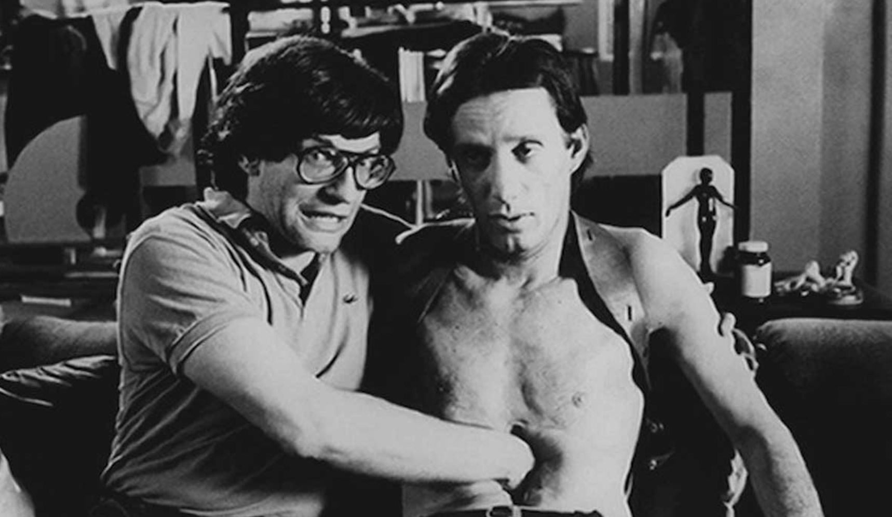
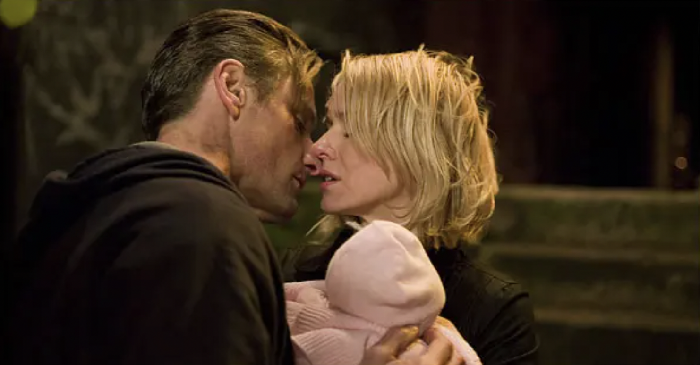
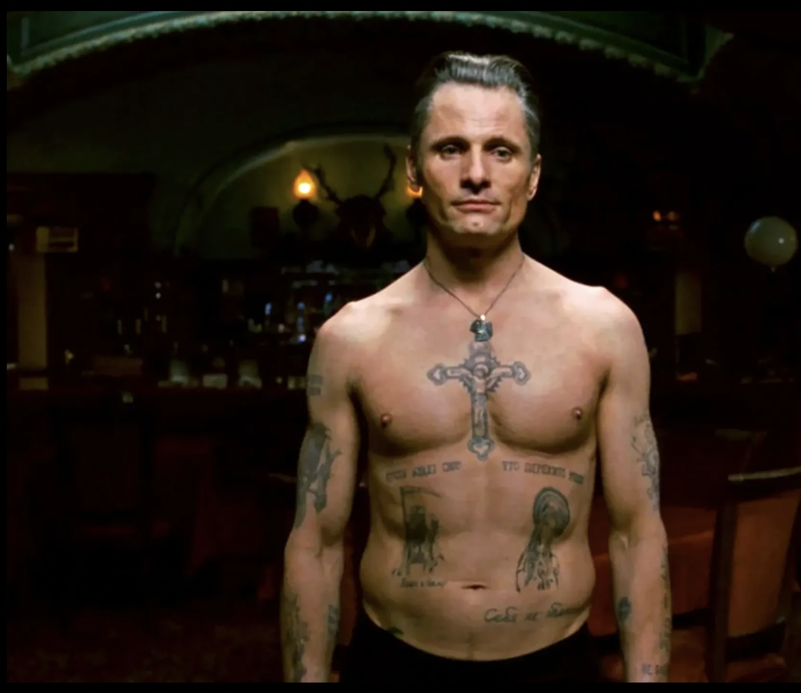

The case of Eastern Promises This is David Cronenberg's film that combines body horror, crime fiction, and spy story.
Body Horror A common difference in the body horror genre is that violations or distortions of the body are rarely the result of immediate or initial violence. Instead, they are generally marked by a loss of conscious control over the body through mutation, disease, or other tropes involving uncontrolled transformation. These violations may manifest through aberrant sex, mutations, mutilation, zombification, gratuitous violence, disease, or unnatural movements of the body.
Body horror and sexuality A famous example is Cronenberg using vaginal imagery on male bodies, most famously on the character of Max Renn (played by James Woods). One of the most striking moments is when Max develops a large, fleshy slit-like opening in his abdomen. It looks distinctly vaginal — soft, organic, and sexualized — and it becomes a kind of "orifice" where videotapes and even weapons are inserted. Cronenberg, who often explores the fusion of technology, the body, and sexuality, uses this imagery to show how media consumption is becoming deeply invasive, even bodily. The idea is that technology and media don't just affect your mind — they literally change your flesh.
Now to our spy film Cronenberg's film is set in London and focuses on two characters: a Russian mafia cleaner Nikolai and a Russian-British midwife Anna. We see Nikolai both pariticipating in acts of violence (rape, clipping murder victims' fingers, etc.) as well as in acts of unusual kindness (he gives an icon to a Ukrainian sex worker, helps Anna, saves her uncle). He is a reluctant anti-hero. The character follows the famous formula from Goethe’s Faust: "Say at last – who art thou?/That Power I serve/Which wills forever evil/Yet does forever good."
In Eastern Promises, the primary site of body horror is Nikolai's body. Nikolai is an undercover FSB agent working under license from the British government. He has modified his body by getting tattoos to infiltrate the Russian mob in London. The viewers gradually discover his tattoos while he commits acts of violence and rises in the mob's rank until he earns the promotion to the vor v zakone (criminal authority in Russian mafia). He receives the tattoos singifiying his new position: the eight-pointed stars. This ultimate transformation marks the point of no return for Nikolai, a common device for Cronenberg's horror films. The hero transforms into a monster and cannot go back to his pre-monster identity. The undercover Russian-British agent mutated into the mafia kingpin.
The bathhouse battle scene is the spectacle of the monster in action. Nikolai-the-mafia-tsar is naked (supposedly vulnerable) but more than capable of eliminating his assailants: flesh is pierced, bones are crunched.